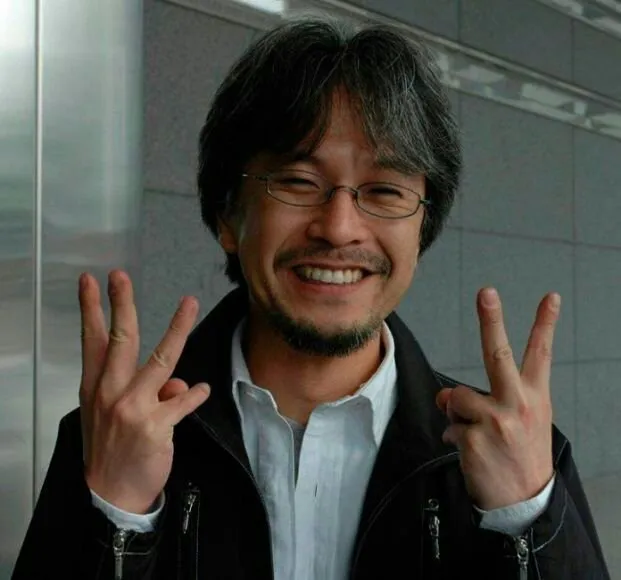

Biography
Eiichiro Oda, born on January 1, 1975, in Kumamoto City, Kumamoto Prefecture, Japan, is a Japanese manga artist, best known for creating the manga series "One Piece". Since its inception in 1997, "One Piece" has become the best-selling manga series in history, making Oda one of the most acclaimed and successful manga artists of all time.
Oda was inspired from a young age by Akira Toriyama and his famous work "Dragon Ball". He submitted his work at various competitions, striving to become a noted manga artist. His perseverance paid off when he began serializing "One Piece" in Shueisha's Weekly Shōnen Jump. The series has not only achieved commercial success but also critical acclaim, touching the hearts of millions worldwide.
According to both himself and his editors, Oda is an ardent worker and perfectionist.[4] By his own estimation, he sleeps only three hours per day during a typical work week.[5] During his first years at Shueisha, Oda was also noted to be unusually impatient and blunt for an aspiring mangaka, willing to argue with senior mangaka and editors on topics as major as story approval and minor as workplace music. This was gradually reduced through a combination of indulgence from the senior mangaka and discipline from the editors.[6] However, when interacting with fans—particularly in his SBS columns—Oda usually assumes a very laid-back, eccentric personality, eager to make jokes (especially those involving puns and/or toilet humor) and deprecate himself at any opportunity. Despite his age and status, he freely allows fans to address him with his grade-school nickname "Odacchi" (or the even more intimate "Ei-chan"). Per mangaka custom, Oda rarely allows himself to be photographed or filmed. He generally requests that print interviews be illustrated by his personally-drawn caricatures, and only agrees to video recordings if they take care to avert his face (or cover it up in post-production).
Future Oda stated in One Piece Blue: Grand Data File that he wanted to create a robot manga after he finished One Piece.[34] However, he later stated that he would never draw any more long-runners because his physical health could not stand it.[35]